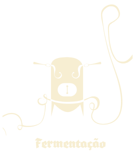

"Reinheitsgebot", 23 de Abril de 1516 - Lei da Pureza da Cerveja
Processo de fabrico da nossa cerveja
A nossa Cerveja, é produzida segundo um processo 100% NATURAL
onde a selecção da matéria-prima é o principal segredo, começando pela ÁGUA DE COIMBRA.
Maltagem
Os grãos são preparados para o fabrico de cerveja.
O grão é adicionado a um tanque com água, dando em seguida a germinação.
Em seguida o malte passa para temperatura muito elevada em forno.
Brassagem
Converte os amidos libertados na fase da maltagem em açúcares que podem ser fermentados, formando-se o mosto que depois é filtrado.
Fervura
Dá-se a esterilização do mosto, elimina substâncias indesejáveis e dá-se a fixação final do mosto.
Nesta fase o lúpulo é adicionado, contribuindo assim com o sabor amargo e os aromas de cerveja.
Fermentação
Os açúcares do mosto, pela ação da levedura, transformam-se em álcool e dióxido de carbono.
Na fermentação começa com a adição da levedura selecionada para o tipo de cerveja desejado.

Maturação
Período de estacionamento da cerveja, a Praxis, a temperaturas adequadas, a fim de permitir a libertação dos componentes voláteis indesejáveis.
Estabilização
Estabiliza-se a cerveja, numa temperatura entre os 0º e os 2º C, de modo a fixarem-se as propriedades da cerveja.
Elimina-se os últimos elementos de turvação em suspensão, dando à cerveja a limpidez desejável.
Enchimento
A cerveja é então acondicionada para distribuição e consumo, em diversos tipos de embalagem: barril, garrafa, lata, etc...